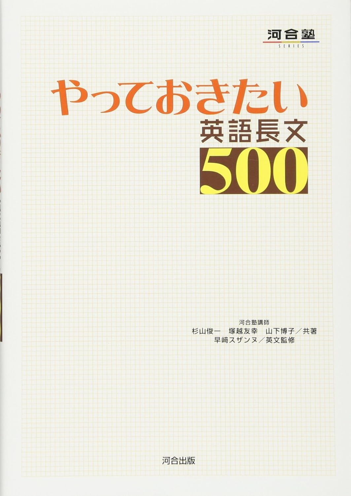

4. 電子メールの影響 [愛知県立大]
p.9–10
▶
7. エイズの治療薬 [茨城大]
p.16–17
▶
8. 名前の持つ魔力 [熊本県立大]
p.18–19
▶
10. 赤ちゃんを左側に抱く理由 [和歌山大]
p.22–23
▶
12. 触れることの大切さ [岩手大]
p.26–27
▶
13. 移動の意味 [立教大]
p.28–29
▶
14. 左脳と右脳 [専修大]
p.30–31
▶
15. 妻の介護 [大阪電通大]
p.32–33
▶
16. 環境に優しい暮らし方 [茨城大]
p.34–35
▶
18. ホッキョクグマ [滋賀県立大]
p.39–41
▶
19. ラジオの役割 [熊本大]
p.42–43
▶
20. 言語の持つ制約 [一橋大]
p.44–48
▶